Introduction to Web Accessibility

Nawaz @PayPalInclusive
Accessibility Team
- Cathy O’Connor (cgunn), Program Manager, Accessibility
- Prem Nawaz Khan (pkhan) , Engineer, Accessibility
- Shalini , Engineer, Accessibility
- And all of you!
What is Web Accessibility?
Making the web usable by EVERYONE, regardless of their ability or disability
Statistics
About 15 percent of the world's population — some 785 million people — has a significant physical or mental disability, including about 5 percent of children, according to a report prepared jointly by the World Health Organization and the World Bank.
Reasons for making PayPal Accessible
Policy and Social Benefit
- Inclusion is a core value of PayPal. We respect and value uniqueness and diversity. PayPal is for EVERYONE, EVERYWHERE AT ALL TIMES.
- Providing equal opportunity for people with disabilities
- Benefits to people without disabilities, including people using mobile devices, older people
- Makes us good
Reasons for making PayPal Accessible
Financial factor
- Continued growth of our customer base
- Strengthening of their engagement with PayPal
- Avod Law suits
Reasons for making PayPal Accessible
Legal Factor
- U.S. Americans with Disabilities Act (ADA) , Section 508 (Refreshed January 9, 2017)
- U.K. - The Disability Discrimination Act 1995
- Australia - Disability Discrimination Act 1992
- India – Persons with Disabilities Act
-
And many more .. List of country policies
List of Litigations
Accessibility Benefits everyone
Accessibility Benefits everyone
Accessibility Benefits everyone
Designing for People with Disabilitues
- Visual
- Auditory
- Motor
- Cognitive
Visual
- Blind
- Low vision
- Color Blindness
Blind
- They use screen reader
- Need text description of images
- Should be able to use the app with keyboard
- Proper headings
Low Vision
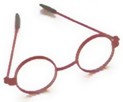- They use screen reader or maginifiers
- App can be zoomed easily
Color blind
- Can be red defiency (pratonipa), green defecinecy (Deuteranopia), or cannot see any color (Rod Monchromacy)
- Reds and greens are often indistinguishable
- Color should not be the only way to show information.
- Provide suffecient contrast . WCAG 2.0 level AA requires a contrast ratio of 4.5:1 for normal text and 3:1 for large text (14 point and bold or larger, or 18 point or larger). Tool: Color contrast tool
Designing for Old users
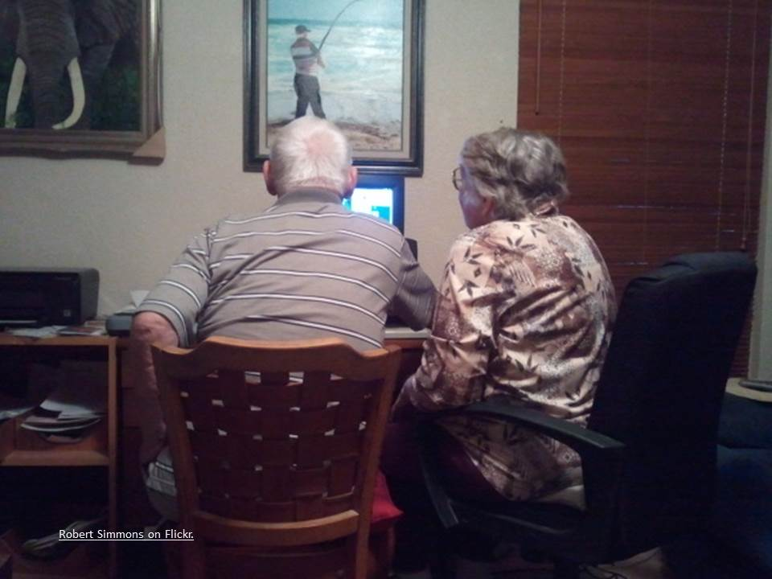Old users -Challenges
- Everyone of us going to become old and may face all or some of these?
- Vision Decline - Decreasing ability to focus on near tasks,Contrast sensitivity,Pupil shrinkage
- Hearing loss
- Motor- Trembling in the hands , may operate with single fingers
- Cognitive - shows decline in memory
Reference: Web Accessibility for Older Users: A Literature Review
Some examples
Email with image of text

Red defiency (pratonipa)
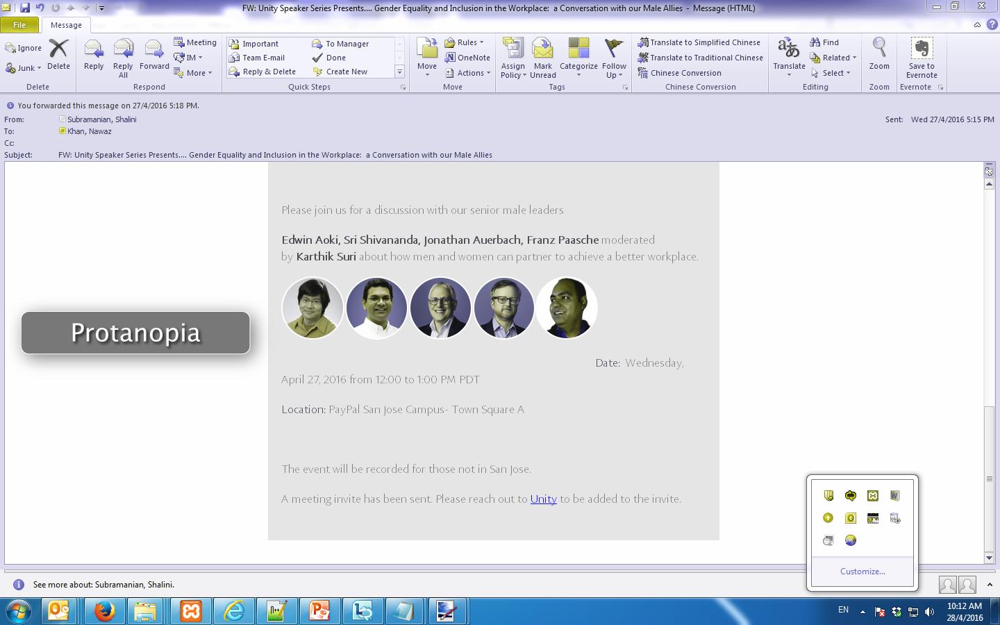Green defecinecy (Deuteranopia)
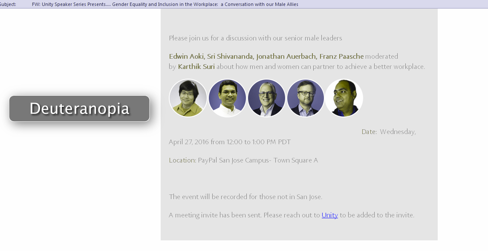How many fields have error?

How many fields have error?
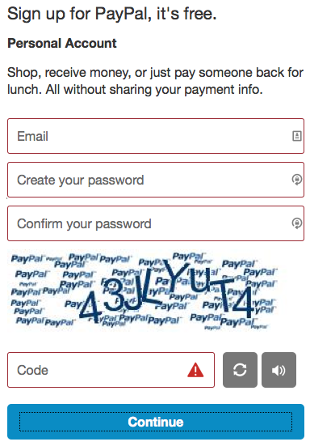In a word document use actual headings
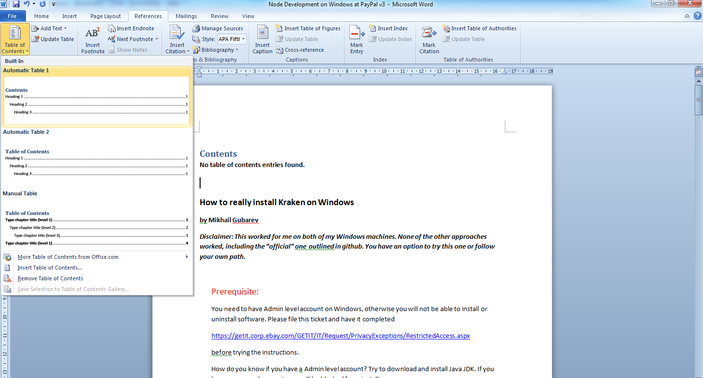Challenge with Form labels inside form element
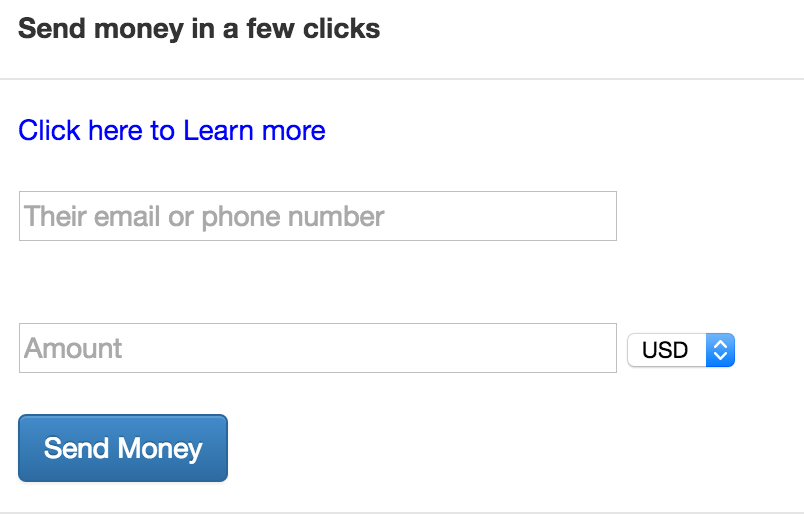Challenge with Form labels inside form element
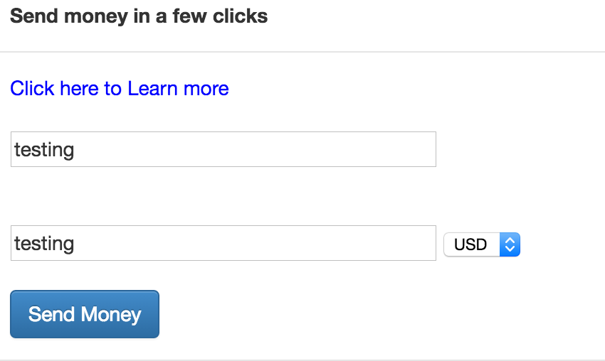Menu's that will open up for Mouse only users

Link Challenge - Which one is a link?
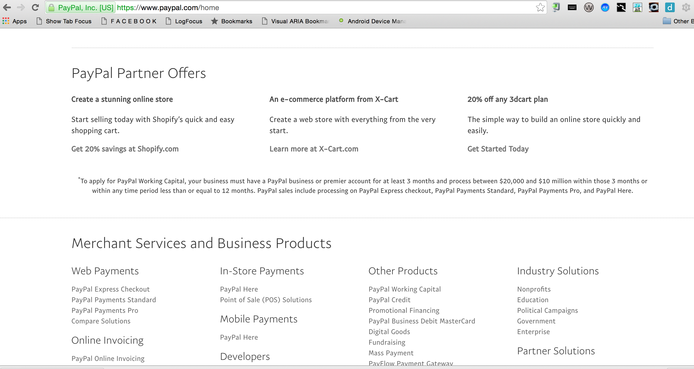Link Challenges
- Without underline is problematic for color blind, old , cognitive or literacy impaired users
- Without focus outline problematic for low vision and screen reader users
Seperate Session on Front End Accessibility, Mobile Accessibility (Android and iOS)
Our Innovations
- AATT - The testing Tool for continous integration and unit testing
- Bootstrap Accessibility Plugin - Plugin for the famous Bootstrap plugin
- Skipto plugin - Skip blocks of content for keyboard only and screen reader users
- amCharts plugin - Interactive Dynamic chart Merchants login
- HTML5 Accessible Video Player
Showcase
- At San Jose Building No. 10
- At Chennai – 1st Floor 1.3.36 (NAMPADHA)
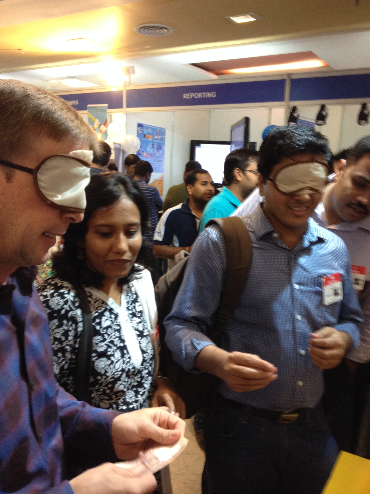 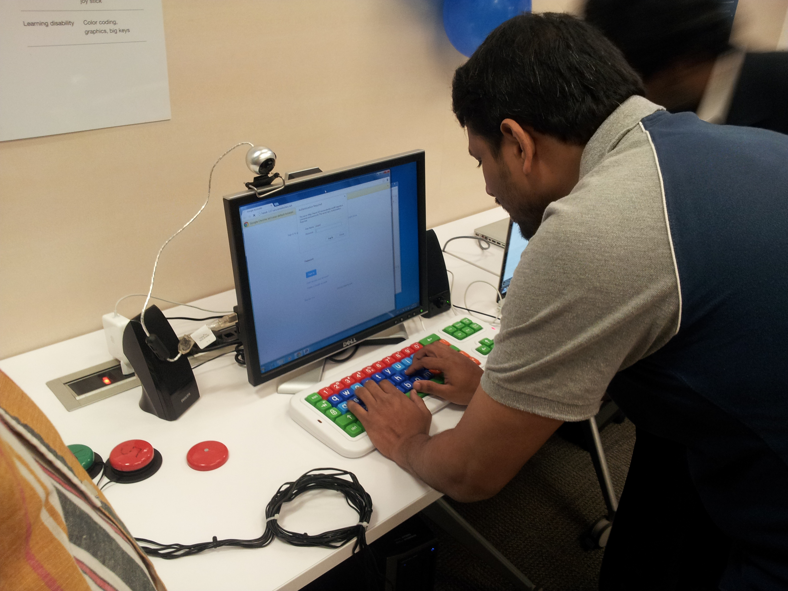